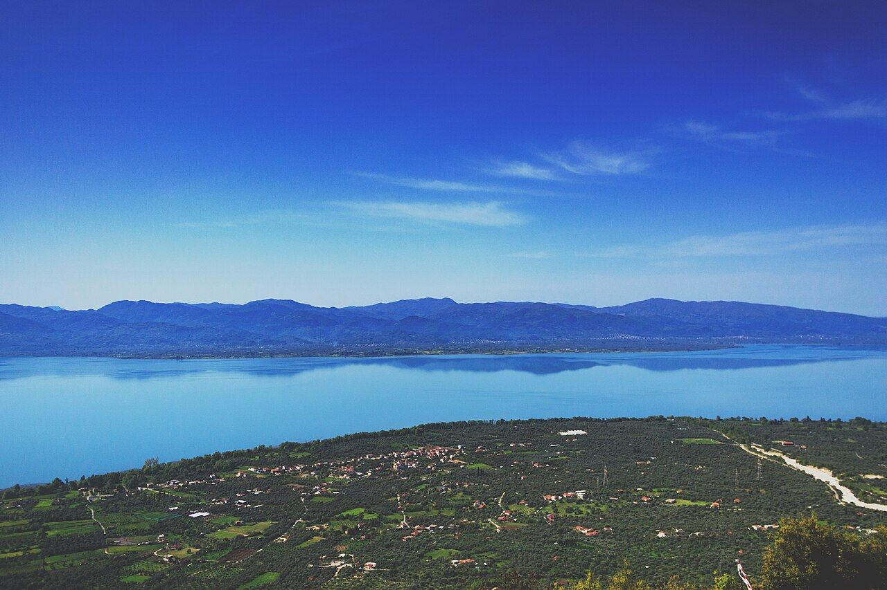

📍 Αιτωλοακαρνανία, Δυτική Ελλάδα | 📍 Έκταση: ~96 τ.χλμ.
✨ Η μεγαλύτερη φυσική λίμνη της Ελλάδας με καθαρά νερά, πλούσια βιοποικιλότητα και ήρεμα παραλίμνια τοπία.
- 🏊♂️ Δημοφιλής προορισμός για κολύμβηση, χαλάρωση και δραστηριότητες στη φύση.
- 🥾 Ιδανική για περιπάτους, πεζοπορία και εξερεύνηση της παραλίμνιας περιοχής.
- 📸 Προσφέρει εξαιρετικές ευκαιρίες για φωτογραφία τοπίου, παρατήρηση πουλιών και εικόνες φυσικής ομορφιάς.
- 🌿 Φιλοξενεί σημαντικά οικοσυστήματα και αποτελεί έναν από τους σημαντικότερους υδάτινους φυσικούς θησαυρούς της Ελλάδας.